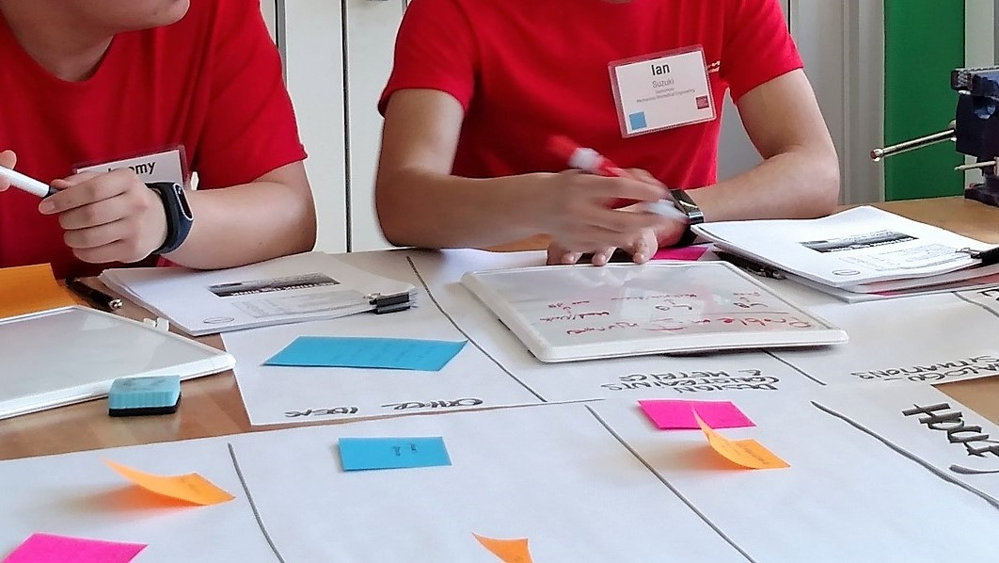
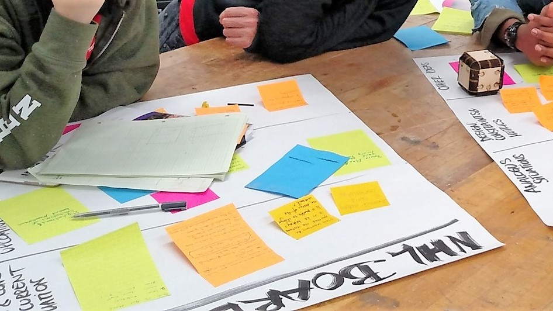
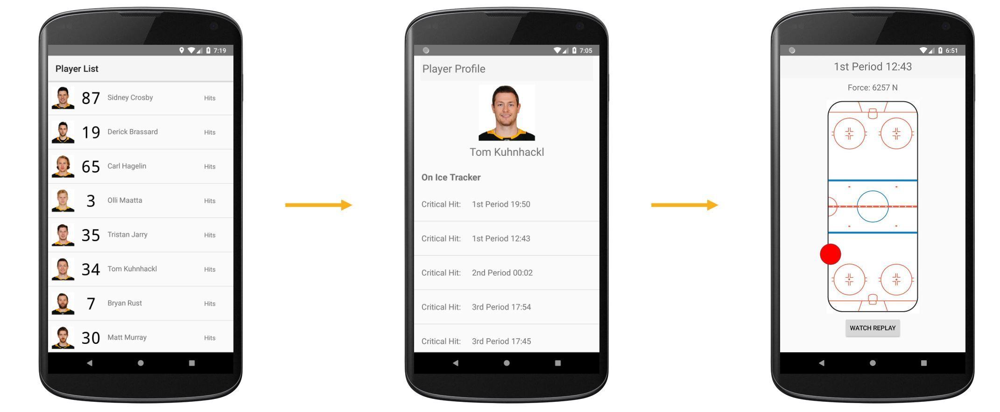

00 | Intro
We hit the ground running with research, defined goals early, and established our
core users to build a framework for success
"Can we reimagine the ice hockey playing space to better protect players from injury without altering the gameplay?"
Hockey is the only major sport with a physical boundary. In a fast moving contact game, the rink walls pose frequent and unpredictable threats to player safety. Coming from a family of hockey fans and players, this project hit home.
01 | Research
Our team sought a full understanding of how and why players sustain injuries. We conducted interviews with past professional players, team doctors, equiptment specialists, and industry management. Through a series of exercises, we synthesized our findings into one key problem; there a major information gap between players and team staff. Because coaches and medical staff do not know when players sustain common small injuries, they are unable to address them immediately. As a result, these injuries are often exacerbated.


02 | Goals
To inform our design, we set two majors goals for the project; collision analytics and real time communication. We set out to actively log, analyze, and categorize player collisions along the boards to determine when potential injuries may have occurred. Subsequently, we wanted to relay pertinent information about potential injuries to coaches and medical staff so they could act immediately.
03 | Users and Stakeholders
From our interviews, we built personas around the key users and stakeholders in our problem space. While we analyzed our persona categories universally, we used examples from the Penguins Organization to ground our design.

"I want to avoid getting
injured during a game"
"I want to only put players
that are healthy on the ice"
"I want to treat player
injuries immediately"
"I want to hold teams
accountable for safety"
04 | Prototyping and Development
After a careful analysis of our stakeholders and their needs, we converged on designing an embedded system to register player-specific collisions with the boards and analyze the force and nature of impact to determine if a potential injury may have occured. This information would be fed to coaches and medical staff in real time via a companion app which would live on the Ipads they use for watching replays on the bench.
App UI/UX Design
On the digital UI, the user (coach or medical staff) can view all of their team's active players in list form, and then select a player to see all hits they've sustained which were considered critical enough to cause injury. Working with the Penguins Organization's team doctor allowed us to refine our model for what impact force may cause injury. If the user is concerned about a specific hit, they can select it to see where on the ice it occured and access a video replay. Although our team lacked a strong visual designer, using well recognized themes and from the NHL website allowed us to create a clean UI.

Hardware and Board Integration
The electronics included a network of force sensors to register impact and an RFID reader to identify the specific player(s) involved in a collision. Because our research indicated players would not be receptive to major equiptment changes, RFID tagging was optimal given it's discrete nature. The electronics would be embedded in a novel rink glass design consisting of a thin thermoplastic polyurethane (TPU) film between two layers of clear polycarbonate. The polycarbonate has identical surface qualities to the traditional acryllic board so the gameplay would not be affected, and the TPU layer acts as a glue while providing shock protection for the sensors.


05 | Conclusion and Reflection
It was amazing to see how quickly we went from basic user research to low fidelity sketches to functioning products. Working across both software and hardware design exposed us to a vast array of new challenges and problems unique to the intersection of the disciplines.
Diversity Fuels Innovation
In choosing such a multi-faceted soltuion, we relied heavily on our team's diversity of academic expertise and life experiences. Everyone at one point or another toggled between leader, mentor, and maker roles to keep the ship running.
Know Your Users
Moreso than ever, well-founded user research was key to our success. By immersing ourselves in the hockey culture, we made key discoveries about what players would and would not tolerate changes to on the physical ice rink.